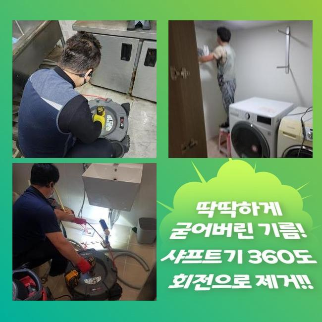
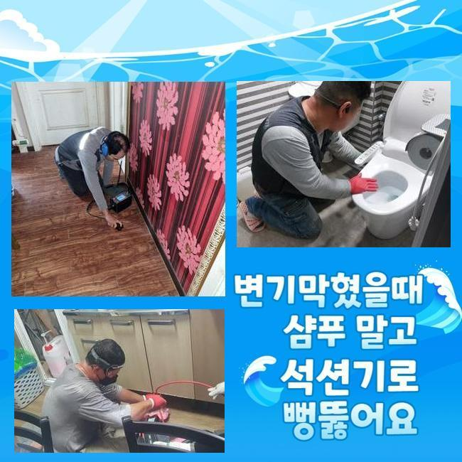
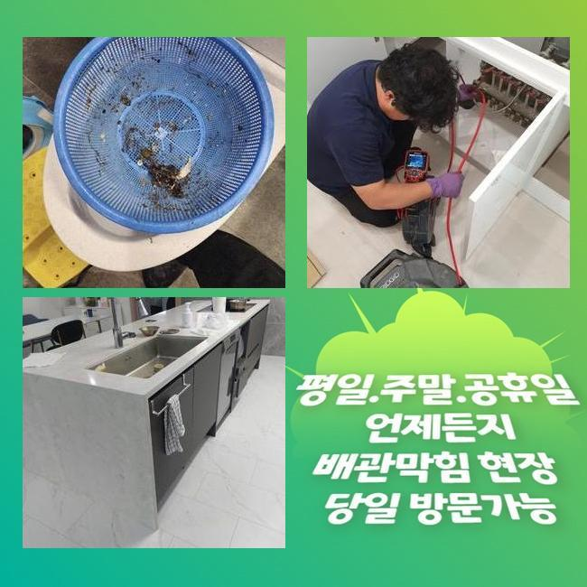
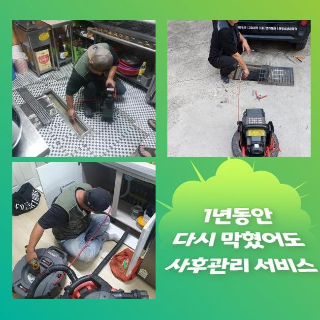
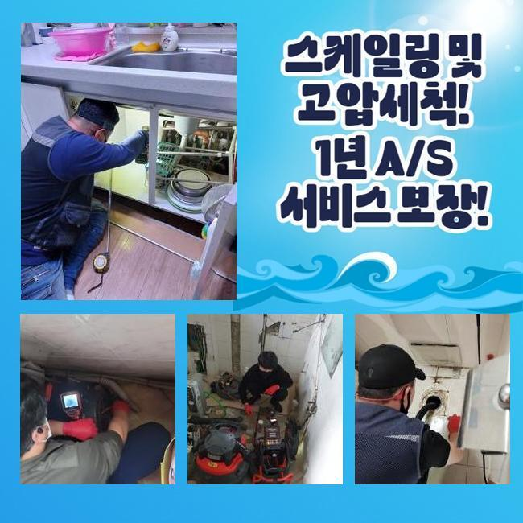
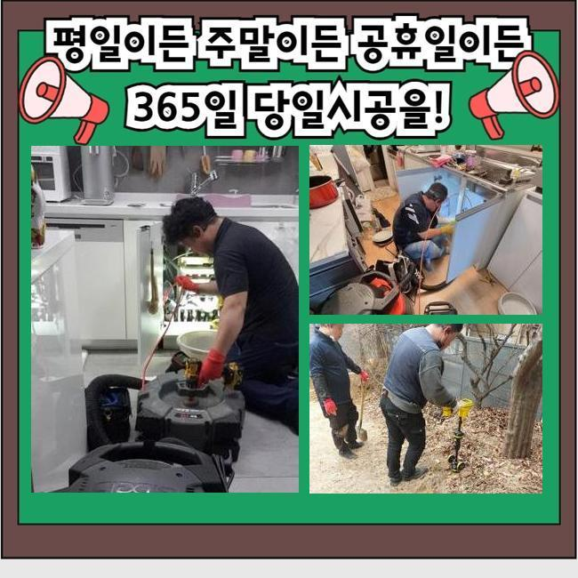
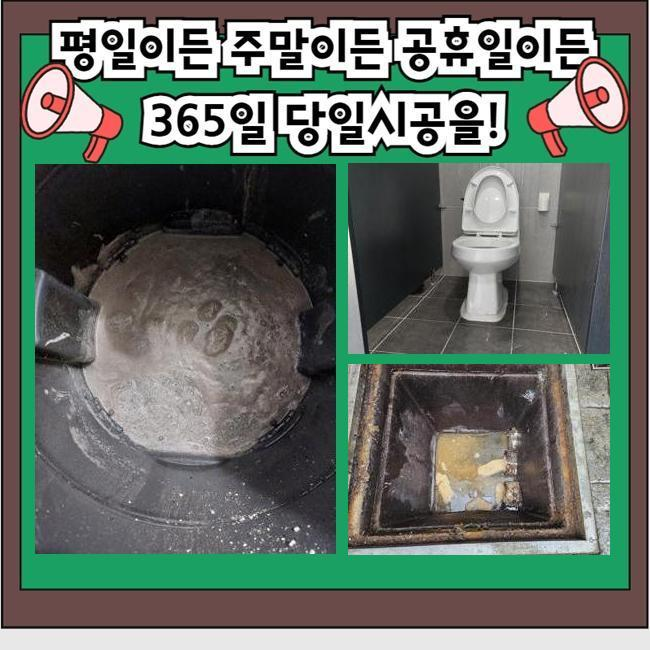

🏠 천안 쌍용동욕실뚫음 성정1동 하수구청소장비 설비출장
용인시 처인구 배관막힘 전문 시공 후기

📋 작업 개요
- 위치: 용인시 처인구, 수원시 영통구, 화성시 동탄
- 서비스 유형: 배관막힘, 하수구청소, 고압세척, 내시경점검
- 작업 일시:
- 업체명: 하수구수사대 (010-5615-2118)
🔍 문제 상황
천안 쌍용동욕실뚫음 성정1동 하수구청소장비 설비출장
더운 날씨가 지속되면서 하수구에서 발생하는 냄새때문에 스트레스를 앓으시는 분들이 어마어마하게 많아졌습니다
간단하게 나오는 시중의 약물을 부어준다고 해도 이렇다할 개선이 되지 않아서 허무할 때도 많으셨을 겁니다
배수구의 차단 현상부터 악취가 나는 사태까지도 손쉽게 보수를 해드릴 수 있는 과제이니 후각적인 문제로 난감하시면 저희에게 전화주세요
매일같이 사용하는 하수관은 실내의 욕실과 부엌에서 엄청난 용량의 하수와 노폐물들이 이동하게 되는데요
케어를 신중히 하더라도 안쪽에 유입된 미세 입자들이 축적돼서 부피가 커지는데요
세월이 가면 갈수록 더욱 밀착되어 말라붙어서 이 덩어리가 하수가 지나가는 통로가 제지됩니다
이렇게 물길이 느려지다보면 어찌할 방법이 없는 배관장애 사태로 비화할 수 있어요
배수도 영 느릿느릿해지고 고인 물이 내려갈 생각을 하지 않고 만일 더욱 심해진다면 내부 하수가 역행합니다
하수구 곳곳에 붙어있던 식자재의 잔해나 유분이 부패하면서 고약한 향을 집안으로 들어가게 합니다
이 과정에서 벌레까지도 내부로 진입하다보니 여러모로 폭탄같은 존재입니다
엄청난 고통을 안고 계시던 고객님은 배수로 막힘으로 사업에도 큰 문제가 나타나서 진땀을 빼셨다고 합니다

🔎 원인 분석
💡 전문가 진단: 정밀 진단 장비를 사용하여 슬러지의 고착 여부를 판명하고 타격/세척 작업을 실시했습니다.
웬만하면 당장 이곳으로 와주실 수 있냐고 황급히 연락을 주셨어요
오늘의 현장은 식당이었고 미세한 입자의 음식물 찌꺼기를 괜찮겠지하는 마음으로 하수관 속에 배출하는 경우도 간혹 있다 하셨어요
이상 없이 쓰다가 예상치 못한 순간에 주방 곳곳의 배수로 모두가 딱 멈춰버려서 적잖이 당황하셨다고 해요
위생적이어야 할 내부에 냄새가 나고 요리도 아예 못하다보니 전혀 영업할 수 없는 사태임에 절망하셨다고 합니다
가장 빠른 스케줄로 찾아뵙고 기초 틀을 형성해주는 막혀버린 사유부터 잡아내는 조사에 돌입했습니다
하수구의 차단은 많은 원인들을 지적할 수 있기는 한데 보편적으로 이런 영업장들은 과정에서 형성되는 쓰레기가 흘러가서 오류를 형성하는 경우가 극히 우세합니다
문제에 대한 정보를 확보하려고 안을 선명히 내보여주는 고급 내시경 도구를 항상 적용하여 상황을 봅니다
배수로가 차단된 곳들을 다 잡아주고 최상의 효율성을 갖춘 접근법으로 신속히 대응할 수 있어야 합니다
음식을 대접하는 준비과정 중에 다량의 식용유가 배출되었고 누적량이 증폭하면서 슬러지화가 되어서 막힘을 유발한 것이었죠
이미 군집화된 기름때는 물을 일시에 방출한다고 하여 그다지 변화를 만들지 못하는데 여러 시중의 제품들을 통해 뚫음을 적극 실천하시는 고객님들도 많이 뵀습니다
힘만 빠지게 될 것이고 약간 나아지는 듯 할 순 있으나 희망고문이 될 때가 많아요
딱딱한 물질도 다 부숴주는 모터 구동 방식의 샤프트라는 첨단 기기의 힘을 빌려서 내부 정화에 임하게 됩니다

🔧 작업 과정
정체를 빚던 수돗물이 통쾌하게 빠져나가는 걸 생생하게 전달드렸고 바로 영업을 해도 되겠다며 감사한 마음을 알려주셨어요
이후에도 미리 의뢰를 해주신 다른 분이 계셨던지라 쉼 없이 이동했습니다
여유롭고 널찍한 내부의 대형 식당인데 특이하게도 평이한 주택을 리모델링한 곳이었죠!
실제로 이전에도 몇 번 하수관이 완전 마비되어버려서 업체의 서비스를 요청하셨던 일들이 한두번이 아니었다고 합니다
약간의 시간만 흘렀는데도 재발이 일어나서 전문가에 대한 부정적인 결과를 예상하셨어요
막막한 심정으로 지역 커뮤니티에 글을 올렸다가 저희를 보석처럼 발견했다고 하셨어요
지속적으로 관리업무를 일임해온 업체는 높은 수압의 물로 청결하게 내부의 불필요한 것들을 없애드렸다고 호언장담했다는데요
꽤나 가까운 시점에 처리를 받았음에도 동일한 상황이 터지자 못참고 저희를 찾아주신 것이었어요
주기적인 막힘이 반복되는 상황이면 더욱 주의 깊은 검사 단계를 밟아가면서 현명하게 다시 스캔을 해주어야 해요
옥외 시설물 뚜껑을 열어서 내외부 각기의 시스템 안에 배관 진단 장치를 동원해서 오류 인자를 발굴해요
세부적 좌표를 찾아주고 강력한 구동력을 보이는 장비로 강력하게 붙은 기름때를 쪼개 나가기 시작한 것입니다
이렇게 단계적으로 막힘을 극복하게 되었으며 하수가 다시 방출되어지는 모습을 두눈으로 뚜렷하게 확인했죠
놀랍도록 변모한 파이프의 현황이 중개가 되었고 내부가 정돈되는 과정을 지켜볼 수 있도록 해드렸어요!
매장의 실내에서만 뚫음 시공을 해드린 것인데 과거도 마찬가지로 이런 청소를 해보셨었음에도 여전히 시도 때도없이 막혀버린다는 것은 다른 원인이 있다고 보여서 마당의 하수관으로 이동해서 두루 점검하기로 했습니다
추가 안건인 옥외 시설물 내부는 보다 깊숙한 영역에서 막힘의 동기를 잡아냈습니다
장소가 방대했기 때문에 소규모의 장치를 써서는 넘을 수 없는 커다란 벽을 체감하시게 될 것입니다!
대신에 고압세척 장비를 항상 가져다니는데 옥외를 깨끗하게 만드려면 고압수 세정 작업도 지원을 해주어야할 듯 했어요
시공 내역을 알려드리고 물살을 형성해줄 물을 인입해준 뒤 목표지점으로 쏴서 잔류한 찌꺼기 덩어리들을 무결점 처리를 완수했습니다!
기대치를 초과하는 규모의 노폐물이 울컥대며 투출되어 고객님도 놀라움을 금치 못하셨고 저또한 매우 놀라게 됐습니다
집중해서 시설물을 세척하다가 결국 청명한 하수가 차오르는 게 보였고 카메라를 재설치해서 이 배수구가 긍정적인 변화가 생겼나 확인했어요


✅ 작업 완료
예리하게 관찰하니 일정 구간에 석회성분이 남아있었기에 샤프트로 갈고 석션으로 제거해 담당해드린 장소를 말끔하게 구성해 드리게 되었어요
잔해가 전혀 없어야만 재막힘이 도래할지 모른다는 불안을 가라앉힐 수 있으니 약간은 더 걸리더라도 높은 시공 품질을 추구합니다!
관로의 맵을 알아보거나 내시경으로 내부 탐사를 하며 정밀하게 현안을 진단하고 어떤 종류의 막힘이라 해도 부드럽게 상황을 개선하겠습니다
일반 아파트나 빌라 면학 시설과 같은 모든곳을 폭넓게 시공해 드리오니 하수구 장애가 생긴 곳이 도심과 멀다고 해도 이런저런 걱정하지 마시고 출장해달라 말씀만 해주세요
유선으로 간단하고 짧게 브리핑만 해주신다면 세부적인 것은 현장을 찾아 문제 생긴 지점들을 연구하여 시원하게 풀어드리겠습니다




⚠️ 하수구 배관 막힘 예방 및 관리 가이드
- ✅ 머리카락, 비닐, 물티슈 등 물에 분해되지 않는 이물질은 절대 흘려보내지 마세요.
- ✅ 기름기 많은 식기는 설거지 전 키친타올로 먼저 기름때를 닦아내세요.
- ✅ 주기적으로 배수구에 뜨거운 물을 가득 부어주어 유지방 고착을 방지하세요.
- ✅ 작업 후 1년 이내 재발 시 무상 A/S 보증 서비스를 제공합니다.
💡 핵심 정리
- 확실한 장비 작업(내시경 점검 및 샤프트 스케일링)으로 원인을 뿌리 뽑습니다.
- 작업 후 1년 이내에 동일한 부위 재발 시 100% 무상 A/S 서비스를 보장합니다.
- 서울 · 경기 · 인천 전 지역에 24시간 언제든 긴급 출동할 수 있도록 항시 대기 중입니다.
❓ 자주 묻는 질문 (FAQ)
🚨 용인시 처인구 배관막힘 문제로 고민이신가요?
정확한 원인 진단과 확실한 시공으로 재발 없는 해결을 약속드립니다.
24시간 긴급 출동 | 서울 · 경기 · 인천 전지역 | 1년 내 재발 시 무상 A/S